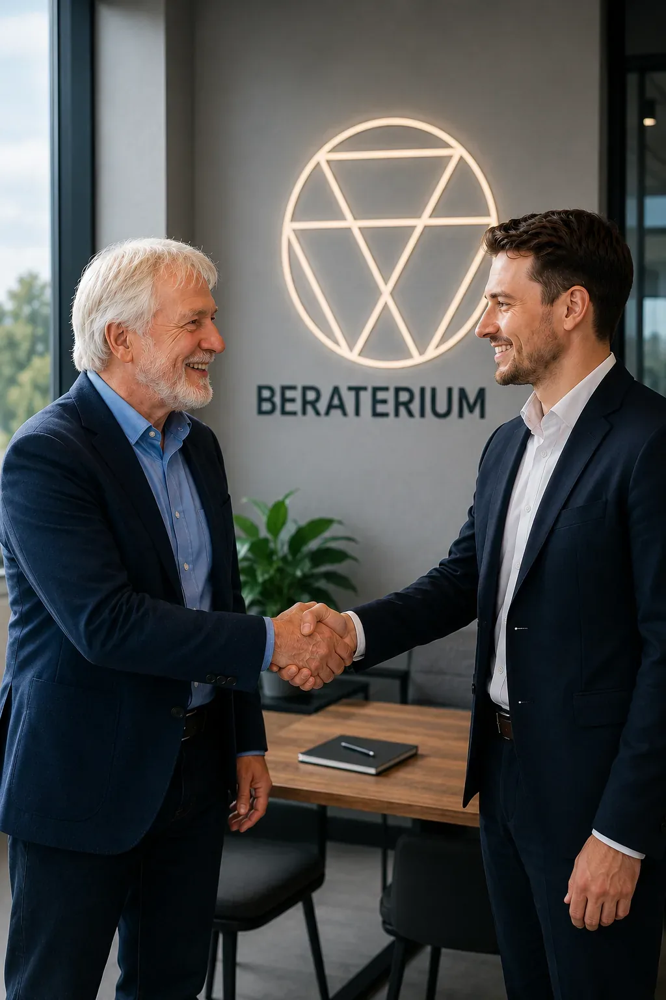

More for startups →The true top risk was a blind spot
He had financing and market on his radar. “Address first” turned out to be a different field: the quality of his analysis and decision models. Result: a prioritised risk portfolio instead of an endless list.
Risk management & business consulting
Enterprise risk management. Accessible to all.
Beraterium makes professional risk management understandable, affordable and ready to use for startups, SMEs and solo self-employed professionals. From gut feeling to clarity – from clarity to decisive action.
- 20 years Experience from corporate, SME & start-up
- 3 levels Hazards before risks — no blind spots
- in € every risk as a euro amount — no traffic lights
- 2 guarantees Relevance & value guarantee
Who we work for
The right BlindSpot Check for every size
Corporations have whole departments for risk management. You have us. The BlindSpot Check is our structured risk analysis and the first step: we make your blind spots visible and rank them in the risk matrix by severity and likelihood. Choose what fits your situation.
-
Startups
Fast growth, many moving parts. In 4 weeks we show you which risks could slow you down – before they become costly.
BlindSpot Check for startups → -
SME & mid-market
Preserve capital, secure decisions, safeguard the future. Risk management and HR analysis that fits your business – not a corporation.
BlindSpot Check for SMEs → -
Solo self-employed
You are your business. If you are unavailable, everything grinds to a halt. In 2 weeks you will know where you are truly vulnerable.
BlindSpot Check for solo →
Why this matters
Many business owners know risks exist. Hardly anyone knows which are the biggest.
Cyber is the number one risk in Germany in 2026 (Allianz Risk Barometer). Yet the most dangerous risk is usually the one nobody has on their radar. Classic methods are built for corporations: complex, theoretical, time-consuming. Beraterium was born from exactly this gap — with a method that, together with your people, delivers a clear, euro-valued picture of your biggest risks in a short time. Understandable, practical, without bureaucracy.
Our method
Three steps from hazard to action
-
Collect hazards
In a three-level hazard catalogue we capture neutrally what can harm your business – without premature assessment.
-
Value risks in euros
“Imagine it has already happened.” We estimate possible damage in euros and likelihood – and account for what you already do about it today.
-
The right measures
We look for not the most measures – but the right ones – and support implementation.
The risk is on us
Double guarantee
Two clear promises — if we don’t deliver, you get a full refund.
-
Relevance guarantee
“No relevant risk found? Money back.”
If the analysis does not identify a single risk with relevant financial impact (threshold agreed jointly in advance), we refund the full amount.
Learn more → -
Value guarantee
“No measurable value? Money back.”
Before we start, we agree on three value criteria together: two measurable and one emotional. If even one is not met at the end, you receive a full refund. No questions asked.
Learn more →
Who we are
One team, many perspectives, one goal: your security
-

Till Manfred Blania
Connects business, HR and risk management with experience from his own start-ups. Brings leaders and employees together so solutions emerge that actually work.
-

Peter Münstermann
Facilitates open conversations about risks, opportunities and solutions – structured yet human. Makes risk management tangible, understandable and actionable.
-

Aleksandra Polosukhina
Marketing and PR specialist with over seven years' experience – strengthens teams through smart communication and targeted employer branding.
-

Torsten Walter Helbig
Independent financial adviser for over 31 years – develops robust cashflow architectures for lasting security and financial freedom.
-

Joachim Lau
Brings management and staff together to implement improvements that work in day-to-day operations – from fashion to IT modernisation.
After the analysis
Not analysis to file away – solutions to act on.
Vetted experts instead of Google roulette — access only via referral or application. Through Risk Radar we bring the right people together when needed. Clients receive free annual access. Beraterium remains your single point of contact.
Discover Risk Radar →Free self-assessment
Where is your business vulnerable? The Blindspot Check shows you in 10 minutes.
10 to 15 short 'What happens if …' questions about key people, technology and day-to-day operations. Immediate results with traffic-light status and first steps, no sign-up required.
Start the Blindspot Check →Insights
Expert insights from Beraterium
Short, practical articles on risk, leadership, and decisions — from our team, for founders, SMEs, and solo operators.
-
 Risk Management
Risk ManagementClarity in Risk Management: From Hazard Catalogue to Euro Assessment
ChatGPT lists 30 risks fast — without clarity you stay in a cloud. Beraterium shows the path via hazard catalogue, team dialogue and euro assessment.
Read more → -
 Startup
StartupRisk Analysis for Startups and Solo: The New Method
Beraterium rebuilt its risk analysis for startups and solo founders: scenarios instead of checklists, targeted questions instead of a hundred boxes.
Read more → -
 Risk management
Risk managementEU AI Act in Germany: What Changed for Companies on 2 August 2026
The EU AI Act became generally applicable in Germany on 2 August 2026 — transparency duties, fines up to €35m and a new national AI authority.
Read more →
From the field
What the BlindSpot Check reveals
Five anonymised examples – the biggest risk is almost never where you expect it.

Do you know your three biggest risks?
30 minutes, free, no sales pitch. You leave with genuine insight – however you decide to proceed.
Book a free intro call